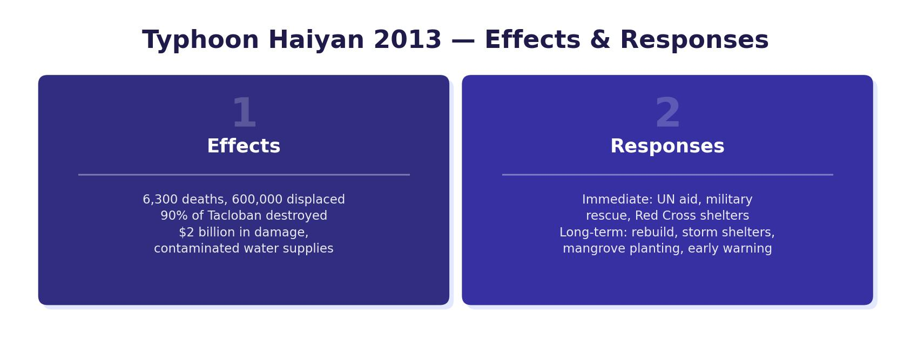

Case Study: Typhoon Haiyan (2013)
Typhoon Haiyan struck the Philippines in November 2013. It was one of the strongest tropical storms ever recorded — a Category 5 typhoon on the Saffir-Simpson scale, with sustained wind speeds of up to 315 km/h. The city of Tacloban on the eastern coast was one of the worst-affected areas.
The Philippines is a group of islands in South-East Asia, located in the western Pacific Ocean. It sits directly in the path of typhoons that form in the Pacific, making it one of the most storm-affected countries in the world.

Primary Effects
Primary effects are the immediate impacts caused directly by the storm:
- 6,300 people were killed, most of whom drowned in a 5-metre storm surge that swept through coastal communities.
- 1 million homes were destroyed, leaving 4.1 million people homeless.
- Flooding was widespread, destroying 11 million tonnes of crops.
- Power lines and trees were brought down, blocking roads and cutting off access for emergency services.
Secondary Effects
Secondary effects are knock-on consequences that follow the primary effects:
- 600,000 people were displaced from their homes and forced to live in 1,100 emergency camps.
- 10,000 schools were destroyed, denying children access to education for months.
- Broken sewer pipes contaminated water supplies with sewage, allowing waterborne diseases like cholera to spread.
- Soil was contaminated with sea salt from the storm surge, preventing crops from growing. The price of rice rose by 12%, making food even harder for survivors to afford.
Immediate Responses
Immediate responses focused on saving lives and meeting basic needs:
- 800,000 people were evacuated before the storm hit, saving many lives.
- The indoor sports stadium in Tacloban was used as an evacuation centre — however, many people who sheltered there drowned when the storm surge flooded the building.
- The Philippine government sent out emergency medical supplies, though some were washed away by floodwaters before they could be distributed.
- $89 million was raised by 33 countries (including the UK) to provide food, clean water and medical care.
Long-Term Responses
Long-term responses aimed to rebuild and reduce the impact of future storms:
- The Philippine government introduced the “Build Back Better” programme, rebuilding homes and infrastructure to higher standards so they could better withstand future storms.
- A storm surge warning system was installed along the coast to give earlier warnings.
- A no-build zone was established along the coastline, preventing construction in the most vulnerable areas.
- Mangroves were replanted along the coast to act as a natural barrier against future storm surges.
Managing Tropical Storms: The Three Ps
Countries can reduce the damage and death toll from tropical storms using the three Ps: prediction, protection and planning.
Unlike earthquakes, tropical storms can be tracked and predicted because they form over the ocean and take days to reach land. Aircraft fly over (or even through) storms to measure wind speed and pressure. Satellites track cloud movement from space. Weather sensors and drones can be sent into the eye of the storm. Since 1992, NOAA has used supercomputers to analyse data from storms and predict their path — by 2013, they could give a 5-day warning of a storm hitting within 400 km. However, predictions are not always acted upon — the people of Tacloban were warned about Haiyan but many ignored the warning because they expected a minor Category 1 storm, not a Category 5.
Protection involves reducing the physical damage a storm can cause. Measures include: installing window shutters that lock to prevent glass shattering; fitting roof straps between walls and roofs to stop roofs being blown off; reinforcing garage doors and entrance doors to prevent them buckling in high winds; installing emergency electricity generators so hospitals and schools have power if cables are damaged; and securing loose objects like garden furniture that could become dangerous projectiles in high winds.
Planning means being prepared before a storm arrives. This includes: knowing the location of evacuation centres and routes; preparing a disaster kit with food, water, a torch and a first-aid kit; having fuel in the car ready for evacuation; informing family and friends of what to do; and training emergency services to respond quickly. Since tropical storms lose energy over land (because they are powered by warm ocean water above 26.5°C), the best advice is often to move inland away from the coast.
Wealthier countries (HICs) can use more of the three Ps than poorer countries (LICs/NEEs). They have the money for satellite monitoring, reinforced buildings and well-trained emergency services. In the Philippines, an NEE, many people could not afford to evacuate or protect their homes, which increased the death toll.